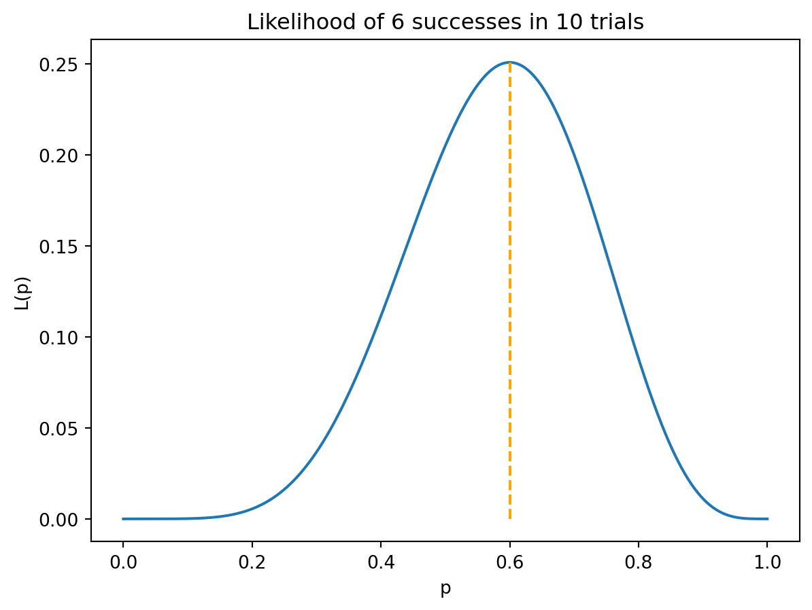
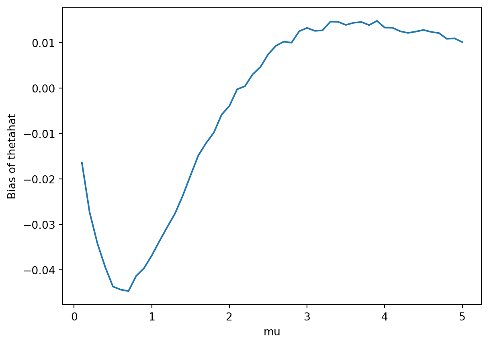
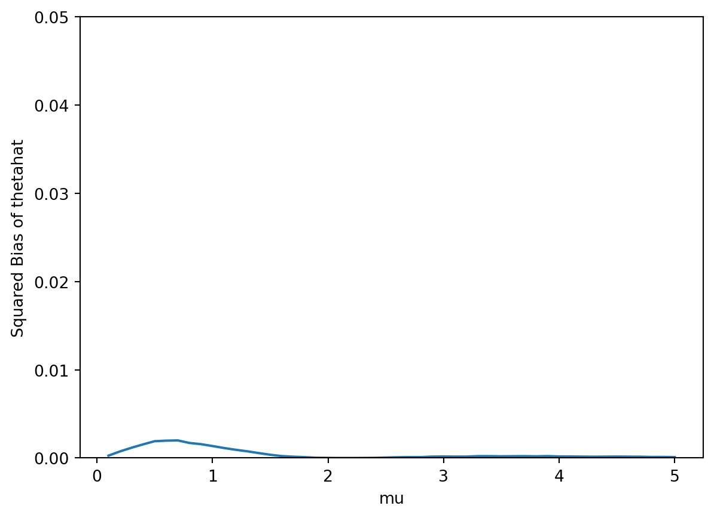
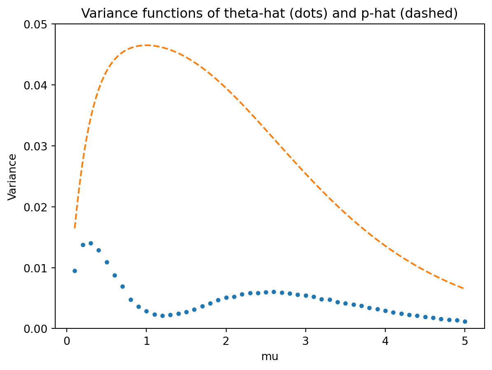

Consider the general problem of estimating a population proportion \(p\) for some binary (success/failure) categorical variable of interest in a large population. Select a sample of size \(n\) and let \(X\) be the number of successes in the sample. (We are considering a general problem here, but recall your particular context from a previous homework.)
Suppose we observe \(x=6\) successes in a sample of size \(n=10\). For this sample \(\hat{p} = 0.6\) and \(\tilde{p} = 0.571\).
Compute and interpret the probability of observing \(x=6\) successes in a sample of size \(n=10\) if \(p = 0.6\).
Compute and interpret the probability of observing \(x=6\) successes in a sample of size \(n=10\) if \(p = 0.571\).
Which of the estimates, 0.6 or 0.571, is a better estimate of \(p\) based on a sample of size \(n=10\) with \(x=6\) successes? That is, which estimate, 0.6 or 0.571, is closer to the true \(p\)? Explain.
Which of the estimates, 0.6 or 0.571, would you choose as your point estimate of \(p\) based on a sample of size \(n=10\) with \(x=6\) successes? Explain. Hint: consider parts 1 and 2.
Suppose you observe \(x=6\) successes in a sample of size \(n=10\). Carefully write the likelihood function. Hint: what is the distribution of \(X\)?
Use any software of your choice to plot the likelihood function. Based on your plot, what value appears to be the maximum likelihood estimate of \(p\) based on this sample? (You can do this just by zooming in on the plot.)
Carefully write the log-likelihood function.
Use calculus to find the maximum likelihood estimate of \(p\) based on \(x=6\) successes in a sample of size \(n=10\).
Solution
scipy.stats.binom.pmf(6, 10, 0.6) = 0.251 = \(\binom{10}{6}(0.6)^6(1-0.6)^{10-6}\). If the population proportion of success is 0.6, then about 25.1 percent of samples of size 10 would result in 6 successes.
scipy.stats.binom.pmf(6, 10, 0.571) = 0.186 = \(\binom{10}{6}(0.571)^6(1-0.571)^{10-6}\). If the population proportion of success is 0.571, then about 18.6 percent of samples of size 10 would result in 6 successes.
We don’t know which of 0.6 and 0.571 is a better estimate because we don’t know what \(p\) is; that’s the reason why we’re trying to estimate it.
The likelihood of observing 6 H in 10 flips is greater if \(p = 0.6\) than if \(p = 0.571\), so if we’re trying to maximum the likelihood, we could pick 0.6 as our estimate of \(p\) based on the 6/10 sample.
When \(n=10\), \(X\) has a Binomial(10, \(p\)) distribution. The pmf is \(\binom{10}{x}p^x(1-p)^{10-x}.\) Plug in the observed data \(x=6\) and view the likelihood as a function of \(p\)\[
L(p) = \binom{10}{6}p^6(1-p)^{10-6}, \qquad 0<p<1
\]
See below. It seems like the overall maximum occurs at a value of 0.6.
Take logs \[
\ell(p) = \log L(p) = \log\left(\binom{10}{6}p^6(1-p)^{10-6}\right) = 6\log p + (10 - 6)\log(1-p) + \log\binom{10}{6}
\]
Differentiate the log-likelihood with respect to \(p\). (Don’t forget the chain rule for \(\log(1-p)\); the derivate of \(1-p\) on the inside is \(-1\).) \[
\ell'(p) = \frac{6}{p} + \frac{10 - 6}{1-p}(-1) + 0
\] Set \(\ell'(\hat{p}) = 0\) and solve to get \(\hat{p} = 0.6\). So the MLE of of \(p\) based on a sample of size 10 with 6 successes is 6/10 = 0.6, the observed sample proportion of success.
import numpy as npimport matplotlib.pyplot as pltfrom scipy.stats import binom# Sequence from 0 to 1 in increments of 0.001p = np.arange(0, 1.001, 0.001)# Binomial likelihood: P(X = 6) for n = 10likelihood = binom.pmf(6, 10, p)# Plot likelihoodplt.plot(p, likelihood)plt.xlabel("p")plt.ylabel("L(p)")plt.title("Likelihood of 6 successes in 10 trials")# Vertical dashed orange line at p = 0.6plt.vlines( x=0.6, ymin=0, ymax=binom.pmf(6, 10, 0.6), color="orange", linestyle="--")plt.show()

Problem 2
Continuing Problem 1, now consider a general sample of size \(n\) with \(x\) successes.
Carefully write the likelihood function. (The expression should contain \(x\) and \(n\).)
Continuing the previous part, carefully write the log-likelihood function. (The expression should contain \(x\) and \(n\).)
Use calculus to find a general expression for the maximum likelihood estimate of \(p\). Your answer should be an expression involving \(x\) and \(n\).
Solution
Replace \(x=6\) from problem 1 with a general \(x\) and \(n=10\) with a general \(n\). The expression has lots of symbols but \(n\) and \(x\) are treated as fixed (like 10 and 6) and the function is just a function of \(p\). \[
L(p) = \binom{n}{x}p^x(1-p)^{n-x}, \qquad 0<p<1
\]
Continuing the previous part, carefully write the log-likelihood function. \[
\ell(p) = \log L(p) = \log\left(\binom{n}{x}p^x(1-p)^{n-x}\right) = x\log p + (n - x)\log(1-p) + \log\binom{n}{x}
\]
Differentiate the log-likelihood with respect to \(p\). \(x\) is treated like a constant just like 6 above. (Don’t forget the chain rule for \(\log(1-p)\); the derivative of \(1-p\) on the inside is \(-1\).) \[
\ell'(p) = \frac{x}{p} + \frac{n - x}{1-p}(-1) + 0
\] Set \(\ell'(\hat{p}) = 0\) and solve to get \(\hat{p} = x/n\). So the MLE of of \(p\) based on a sample of size \(n\) with \(X\) successes is \(X/n\), the observed sample proportion of success \(\hat{p}\).
Problem 3
Assume a Poisson(\(\mu\)) model for the number of home runs hit (in total by both teams) in a MLB game. Let \(X_1, \ldots, X_n\) be a random sample of home run counts for \(n\) games. (The context doesn’t matter, but it helps to have something in mind rather than just the general problem.)
Suppose we want to estimate \(\theta = \mu e^{-\mu}\), the probability that any single game has exactly 1 HR (for Poisson(\(\mu\)), \(P(X = 1) = e^{-\mu}\,u^1/1! = \mu e^{-\mu}\)). Consider two estimators of \(\theta\):
\(\hat{\theta} = \bar{X} e^{-\bar{X}}\)
\(\hat{p} =\text{sample proportion of 1s} = \frac{\text{number of games in the sample with 1 HR}}{\text{sample size}}\)
Compute the value of \(\hat{\theta}\) based on the sample (3, 0, 1, 4, 0). Write a clearly worded sentence reporting in context this estimate of \(\theta\).
Compute the value of \(\hat{p}\) based on the sample (3, 0, 1, 4, 0). Write a clearly worded sentence reporting in context your estimate of \(\theta\).
Which of these two estimators is the MLE of \(\theta\) in this situation? Explain, without doing any calculations.
It can be shown that \(\hat{p}\) is an unbiased estimator of \(\theta\). Explain in words what this means.
Is \(\hat{\theta}\) an unbiased estimator of \(\theta\)? Explain. (You don’t have to derive anything; just apply a general principle.)
Suppose \(\mu = 3.4\) and \(n=5\). Explain in full detail how you would use simulation to approximate the bias of \(\hat{\theta}\) in this case. In particular, specify the spinner you would use to simulate values.
Explain in full detail how you would use simulation to approximate the bias function of \(\hat{\theta}\) when \(n=5\).
Solution (see the end for some code and results)
For the sample (3, 0, 1, 4, 0), the value of \(\bar{X}\) is 8/5 and the value of \(\hat{\theta}\) is \((8/5)e^{-8/5}=0.323\). Using this estimator, based on this sample we would estimate that 32.3 percent of baseball games have 1 home run.
For the sample (3, 0, 1, 4, 0) there is 1 game with 1 HR so \(\hat{p} = 1/5 = 0.2\). Using this estimator, based on this sample we would estimate that 20 percent of baseball games have 1 home run.
We know that the MLE of \(\mu\) for a Poisson distribution is \(\bar{X}\), so by the invariance principle of MLEs, \(\bar{X}e^{-\bar{X}}\) is the MLE of \(\mu e^{-\mu}\).
Over many samples, \(\hat{p}\) does not consistently over or under estimate \(\theta\).
No. \(\bar{X}\) is an unbiased estimator of \(\mu\) but nonlinear transformations do not preserve unbiasedness. \(\hat{\theta}\) is not unbiased estimator of \(\theta\). \[
\text{E}(\hat{\theta}) = \text{E}(\bar{X}e^{-\bar{X}})\neq \text{E}(\bar{X})e^{-\text{E}(\bar{X})} = \mu e^{-\mu} = \theta
\]
For \(\mu = 3.4\)
Create a spinner corresponding to the Poisson(3.4) distribution. For example, \(P(X=0)=e^{-3.4} = 0.034\), \(P(X=1) = 3.4e^{-3.4} = 0.113\), etc.
Simulate a sample of size \(n\) from a Poisson(3.4) distribution by spinning the spinner \(n\) times, say (3, 0, 1, 4, 0) for \(n=5\).
For the simulated sample compute the sample mean \(\bar{X}\) and the value of \(\hat{\theta} = \bar{X}e^{-\bar{X}}\), say 8/5 and \((8/5)e^{-8/5}=0.323\).
Repeat many times, simulating many samples of size \(n\) and many values of \(\hat{\theta}\) for the chosen \(\mu\).
Average the values of \(\hat{\theta}\) and subtract \(\theta=3.4 e^{-3.4}=0.113\) to approximate the bias when \(\mu = 3.4\).
We carry out the process in the previous part for many values of \(\mu\). Choose a grid of \(\mu\) values, say 0.01, 0.02, \(\ldots\), 10
Choose a value of \(\mu\) from the grid, say 3.4
Create a spinner corresponding to the Poisson(\(\mu\)) distribution. For example, if \(\mu=3.4\) then \(P(X=0)=e^{-3.4} = 0.034\), \(P(X=1) = 3.4e^{-3.4} = 0.113\), etc. The spinner will change depending on \(\mu\).
Simulate a sample of size \(n\) from a Poisson(\(\mu\)) distribution by spinning the spinner \(n\) times, say (3, 0, 1, 4, 0) for \(n=5\) if \(\mu=3.4\).
For the simulated sample compute the sample mean \(\bar{X}\) and the value of \(\hat{\theta} = \bar{X}e^{-\bar{X}}\), say 8/5 and \((8/5)e^{-8/5}=0.323\).
Repeat many times, simulating many samples of size \(n\) and many values of \(\hat{\theta}\) for the chosen \(\mu\).
Average the values of \(\hat{\theta}\) and subtract \(\theta=\mu e^{-\mu}\) to approximate the bias for that \(\mu\); for example subtract \(\theta=3.4 e^{-3.4}=0.113\) when \(\mu = 3.4\).
Repeat the above process for all the values of \(\mu\) in the grid and plot the approximate bias as a function of \(\mu\) to approximate the bias function.
Problem 4
Continuing Problem 3.
It can be shown that \(\text{Var}(\hat{p}) = \frac{\theta(1-\theta)}{n}\). Compute \(\text{Var}(\hat{p})\) when \(\mu = 3.4\) and \(n=5\). Then write a clearly worded sentence interpreting this value.
Suppose \(\mu = 3.4\) and \(n=5\). Explain in full detail how you would use simulation to approximate the variance of \(\hat{\theta}\).
Explain in full detail how you would use simulation to approximate the variance function of \(\hat{\theta}\) (if \(n=5\)).
Solution (see the end for some code and results)
When \(\mu = 3.4\), \(\theta = 3.4e^{-3.4} = 0.113\), so if \(n=5\)\[
\text{Var}_{\mu = 3.4}(\hat{p}) = \frac{0.113(1-0.113)}{5} = 0.020
\] This number measures the sample-to-sample variance of sample proportions of games with 1 HR over many samples of 5 games, assuming that the long run average number of HRs per game is \(\mu = 3.4\).
For \(\mu = 3.4\)
Create a spinner corresponding to the Poisson(3.4) distribution. For example, \(P(X=0)=e^{-3.4} = 0.034\), \(P(X=1) = 3.4e^{-3.4} = 0.113\), etc.
Simulate a sample of size \(n\) from a Poisson(3.4) distribution by spinning the spinner \(n\) times, say (3, 0, 1, 4, 0) for \(n=5\).
For the simulated sample compute the sample mean \(\bar{X}\) and the value of \(\hat{\theta} = \bar{X}e^{-\bar{X}}\), say 8/5 and \((8/5)e^{-8/5}=0.323\).
Repeat many times, simulating many samples of size \(n\) and many values of \(\hat{\theta}\) for the chosen \(\mu\).
Average the values of \(\hat{\theta}\), for each value of \(\hat{\theta}\) find its deviation from the average, and then average the squared deviations. This number approximates \(\text{Var}(\hat{\theta})\) when \(\mu = 3.4\)
We carry out the process in the previous part for many values of \(\mu\). Choose a grid of \(\mu\) values, say 0.01, 0.02, \(\ldots\), 10
Choose a value of \(\mu\) from the grid, say 3.4
Create a spinner corresponding to the Poisson(\(\mu\)) distribution. For example, if \(\mu=3.4\) then \(P(X=0)=e^{-3.4} = 0.034\), \(P(X=1) = 3.4e^{-3.4} = 0.113\), etc. The spinner will change depending on \(\mu\).
Simulate a sample of size \(n\) from a Poisson(\(\mu\)) distribution by spinning the spinner \(n\) times, say (3, 0, 1, 4, 0) for \(n=5\) if \(\mu=3.4\).
For the simulated sample compute the sample mean \(\bar{X}\) and the value of \(\hat{\theta} = \bar{X}e^{-\bar{X}}\), say 8/5 and \((8/5)e^{-8/5}=0.323\).
Repeat many times, simulating many samples of size \(n\) and many values of \(\hat{\theta}\) for the chosen \(\mu\).
Average the values of \(\hat{\theta}\), for each value of \(\hat{\theta}\) find its deviation from the average, and then average the squared deviations. This number approximates \(\text{Var}(\hat{\theta})\) for the chosen \(\mu\)
Repeat the above process for all the values of \(\mu\) in the grid and plot the approximate variance as a function of \(\mu\) to approximate the variance function.
Problem 5
Continuing Problems 3 and 4
Compute \(\text{MSE}(\hat{p})\) when \(\mu = 3.4\) and \(n=5\). (You can do the next part first if you want, but it helps to work with specific numbers first.)
Derive the MSE function of \(\hat{p}\). (Hint: use facts from previous parts.)
Suppose \(\mu = 3.4\) (and \(n=5\)). Explain in full detail how you would use simulation to approximate the MSE of \(\hat{\theta}\).
Suppose \(\hat{\theta}\) has smaller MSE than \(\hat{p}\) when \(\mu = 3.4\) (and \(n=5\)). Which estimator would you prefer? Answer, but then explain why this information alone is not really useful.
Explain in full detail how you would use simulation to approximate the MSE function of \(\hat{\theta}\) (if \(n=5\)).
Suppose you determine that \(\hat{\theta}\) has smaller MSE for almost all values of \(\mu\) regardless of \(n\). Recall parts 1 and 2 of Problem 3. Which value of these two estimates (the values from parts 1 and 2 of Problem 3) is a better estimate of \(\theta\)? That is, which of the two estimates is closer to the true \(\theta\)? Explain.
Suppose you determine that \(\hat{\theta}\) has smaller MSE for almost all values of \(\mu\) regardless of \(n\). Recall parts 1 and 2 of Problem 3. Which value of these two estimates (the values from parts 1 and 2 of Problem 3) would you choose as your point estimate of \(\theta\)? Explain.
Solution (see the end for some code and results)
Since \(\hat{p}\) is unbiased, its MSE is just its variance, 0.020 from part 4
Since \(\hat{p}\) is unbiased, its MSE function is just its variance function, \(\text{Var}(\hat{p}) = \frac{\theta(1-\theta)}{n}\) from part 4.
We would prefer the estimator with smaller MSE, so \(\hat{\theta}\) when \(\mu=3.4\), but that’s not useful information because we don’t know what \(\mu\) is.
For \(\mu = 3.4\)
Create a spinner corresponding to the Poisson(3.4) distribution. For example, \(P(X=0)=e^{-3.4} = 0.034\), \(P(X=1) = 3.4e^{-3.4} = 0.113\), etc.
Simulate a sample of size \(n\) from a Poisson(3.4) distribution by spinning the spinner \(n\) times, say (3, 0, 1, 4, 0) for \(n=5\).
For the simulated sample compute the sample mean \(\bar{X}\) and the value of \(\hat{\theta} = \bar{X}e^{-\bar{X}}\), say 8/5 and \((8/5)e^{-8/5}=0.323\).
Repeat many times, simulating many samples of size \(n\) and many values of \(\hat{\theta}\) for the chosen \(\mu\).
For each value of \(\hat{\theta}\) subtract \(\theta=3.4 e^{-3.4}=0.113\) and square the difference, then average these squared differences to approximate the MSE when \(\mu = 3.4\). (Or you could square the bias from part 3 and add the variance from part.)
We carry out the process in the previous part for many values of \(\mu\). Choose a grid of \(\mu\) values, say 0.01, 0.02, \(\ldots\), 10
Choose a value of \(\mu\) from the grid, say 3.4
Create a spinner corresponding to the Poisson(\(\mu\)) distribution. For example, if \(\mu=3.4\) then \(P(X=0)=e^{-3.4} = 0.034\), \(P(X=1) = 3.4e^{-3.4} = 0.113\), etc. The spinner will change depending on \(\mu\).
Simulate a sample of size \(n\) from a Poisson(\(\mu\)) distribution by spinning the spinner \(n\) times, say (3, 0, 1, 4, 0) for \(n=5\) if \(\mu=3.4\).
For the simulated sample compute the sample mean \(\bar{X}\) and the value of \(\hat{\theta} = \bar{X}e^{-\bar{X}}\), say 8/5 and \((8/5)e^{-8/5}=0.323\).
Repeat many times, simulating many samples of size \(n\) and many values of \(\hat{\theta}\) for the chosen \(\mu\).
For each value of \(\hat{\theta}\) subtract \(\theta= \mu e^{-\mu}\) (e.g., \(\theta= e^{-3.4}=0.113\) if \(\mu=3.4\)) and square the difference, then average these squared differences to approximate the MSE for this \(\mu\). (Or you could square the bias from part 3 and add the variance from part.)
Repeat the above process for all the values of \(\mu\) in the grid and plot the approximate MSE as a function of \(\mu\) to approximate the MSE function.
We don’t know what \(\theta\) is, so we don’t know which of the values 0.323 or 0.20 is a better estimate of \(\theta\).
We would chose 0.323 as our estimate because our analysis has shown that \(\hat{\theta}\) is (1) the MLE, so observing the sample we observed is more likely when \(\mu\) is 0.323 than when \(\mu\) is 0.2, (2) as a procedure \(\hat{\theta}\) tends to perform better than \(\hat{p}\) for estimating \(\mu\) in the Poisson case over many samples and over many potential values of \(\mu\).
Simulation for Parts 3-5
For \(mu\) = 3.4. With a for loop but you could also do in a vectorized way (see Colab notebooks)
import numpy as npn =5mu =3.4N_samples =10_000theta_hats = np.empty(N_samples)for i inrange(N_samples):# simulate a sample of size n from Poisson(mu) x = np.random.poisson(mu, size=n)# compute theta-hat x_bar = np.mean(x) theta_hats[i] = x_bar * np.exp(-x_bar)# True value of theta = mu * exp(-mu)theta = mu * np.exp(-mu)# Approximate biasbias = np.mean(theta_hats) - theta# Approximate variance# ddof=1 matches R's var(), which uses sample variancevariance = np.var(theta_hats, ddof=1)# Approximate MSEmse = np.mean((theta_hats - theta) **2)print("Bias:", bias)print("Variance:", variance)print("MSE:", mse)
import numpy as npn =5# grid of mu values: 0.1, 0.2, ..., 5.0mus = np.arange(0.1, 5.1, 0.1)N_samples =10_000# initialize lists to record bias, variance, and MSEbias_thetahat = []var_thetahat = []mse_thetahat = []for mu in mus:# true value of theta for this mu theta = mu * np.exp(-mu)# store simulated theta-hat values theta_hats = np.empty(N_samples)for i inrange(N_samples):# simulate sample of size n from Poisson(mu) x = np.random.poisson(mu, size=n)# compute theta-hat x_bar = np.mean(x) theta_hats[i] = x_bar * np.exp(-x_bar)# approximate bias bias_thetahat.append(np.mean(theta_hats) - theta)# approximate variance# ddof=1 matches R's var() var_thetahat.append(np.var(theta_hats, ddof=1))# approximate MSE mse_thetahat.append( np.mean((theta_hats - theta) **2) )# optionally convert lists to NumPy arraysbias_thetahat = np.array(bias_thetahat)var_thetahat = np.array(var_thetahat)mse_thetahat = np.array(mse_thetahat)
Bias function
Any “wiggles” are due to natural simulation margin of error (can make these go away by simulating even more samples)
import matplotlib.pyplot as pltplt.plot(mus, bias_thetahat)plt.xlabel("mu")plt.ylabel("Bias of thetahat")plt.show()

Squared bias function
Any “wiggles” are due to natural simulation margin of error (can make these go away by simulating even more samples)
import matplotlib.pyplot as pltplt.plot(mus, bias_thetahat**2)plt.xlabel("mu")plt.ylabel("Squared Bias of thetahat")plt.ylim(0, 0.05) # set common y-axis scaleplt.show()

Variance function
Any “wiggles” are due to natural simulation margin of error (can make these go away by simulating even more samples)
import numpy as npimport matplotlib.pyplot as plt# Plot variance of theta-hatplt.plot(mus, var_thetahat, ".")plt.xlabel("mu")plt.ylabel("Variance")plt.ylim(0, 0.05)plt.title("Variance functions of theta-hat (dots) and p-hat (dashed)")# Create x values for theoretical curvex = np.linspace(min(mus), max(mus), 500)# Calculate theoretical variancey = x * np.exp(-x) * (1- x * np.exp(-x)) / n# Add dashed theoretical curveplt.plot(x, y, linestyle="--")plt.show()

MSE function
Any “wiggles” are due to natural simulation margin of error (can make these go away by simulating even more samples)
import matplotlib.pyplot as pltimport numpy as np# Plot MSE of theta-hatplt.plot(mus, mse_thetahat, ".")plt.xlabel("mu")plt.ylabel("MSE")plt.ylim(0, 0.05)plt.title("MSE functions of theta-hat (dots) and p-hat (dashed)")# Add theoretical curve as a dashed linex = np.linspace(min(mus), max(mus), 500)y = x * np.exp(-x) * (1- x * np.exp(-x)) / nplt.plot(x, y, linestyle ="--")plt.show()